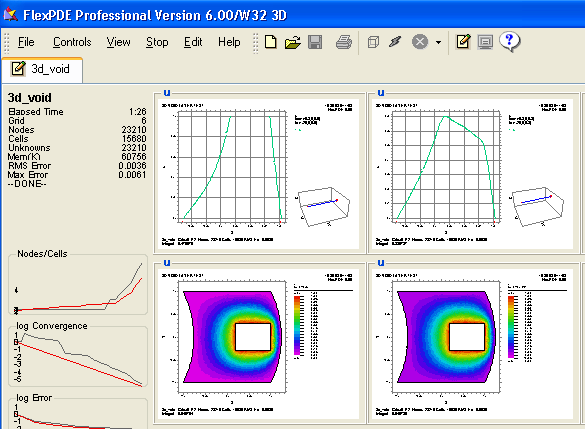

|
When the Problem Finishes |

  
|
|
When the Problem Finishes |
|
When FlexPDE completes the solution of the current problem, it will leave the displays requested in the PLOTS section of the descriptor displayed on the screen. The problem tab will display the Edit icon ( ).
).

At this point you have several options:
Edit or Save the Script
Click "Controls|Show Editor" (or the  Tool) to switch the display into Edit mode, allowing you to change the problem and run again.
Tool) to switch the display into Edit mode, allowing you to change the problem and run again.
From Edit mode, you can click "Controls|Show Plots" (or the  Tool) to redisplay the plots.
Tool) to redisplay the plots.
You can also click "File|Save" (or the  Tool) to save the file, "File|Save_As" to save with a new name, or "File|Close" to close the problem.
Tool) to save the file, "File|Save_As" to save with a new name, or "File|Close" to close the problem.
Switch to Another Problem
Each currently open problem is represented by a named tab on the tab bar. You can switch back and forth among open problems by selecting any tab.
Open a New File
Click "File|Open" (or the  Tool) to open another problem script without closing the current problem.
Tool) to open another problem script without closing the current problem.
Page url: index.html?whentheproblemfinishes.html